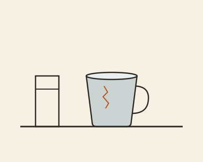

First, make room.
The room was not especially small. It had a north-facing window, a table that could hold four people, and a shelf with too many things on it. Yet every morning it seemed to ask for something else: another lamp, a better chair, a new arrangement.
One Saturday, instead of adding anything, we moved the table away from the wall. A narrow path appeared behind it. Light reached the floor in a place we had not noticed before. Nothing important had been bought, but the room felt newly available.
It is tempting to describe this as a lesson in simplicity. That is too tidy an explanation. The room still held books, unfinished work and the complicated evidence of ordinary life. What changed was our attention. We had made enough space to see the things already there.
“A good room leaves
something open.”
Choose what stays.

The crack is the reason it stayed. A flaw that has been lived with becomes a record of use.
On the shelf was a blue cup with a small crack in its glaze. It had travelled through three homes, mostly unused. There were better cups in the kitchen. This one stayed because of a particular afternoon and the person who had brought it.
The useful question was not whether every object earned its place through function. Some objects are useful because they remember. Others simply make a morning easier. We began putting those two kinds of usefulness beside each other, without pretending they were the same.
We left the cup, the radio and a stack of notebooks. The shelf looked less complete. It also looked more like us. A decision about what stays is a decision about the life we expect to keep living, with room for that expectation to change.
Leave a beginning.
By late afternoon there was a clear space at one end of the table. We did not decide what it was for. A week later a neighbour used it to lay out a map. A few days after that it held a bowl of apples. Sometimes it held nothing at all.
That unassigned place became the most useful part of the room. It could answer a question we had not yet asked. It reminded us that a home, a shared courtyard or a public library does not need to explain every possible future use in advance.
Slower living may begin there: not with a new routine to perform correctly, but with one small space that does not yet belong to a plan. Open the window. Move the chair. Let the next person find a place to sit.